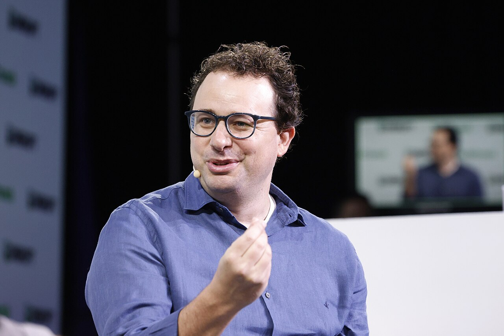

Vol. I · No. 78 · Wednesday, August 5, 2026 · 19 items · ~18 min read
The same tariff returns under its third statute in eighteen months, and twenty-five states are waiting for it in Manhattan.
The Splash · News · New York · cross-spectrumLLCLR
Twenty-five states sue to kill the third tariff, and this time they want the money back
The United States Court of International Trade at Foley Square in Manhattan, where the states filed on Monday. The court holds exclusive nationwide jurisdiction over customs disputes. — Wikimedia Commons
Twenty-five states sued the Trump administration on Monday in the , asking it to strike down the tariffs the U.S. Trade Representative imposed on July 23 under of the Trade Act of 1974. The duties run at 10 or 12.5 percent against 59 countries plus the European Union, covering trading partners that supply 99.4 percent of American imports, and they were justified on the ground that those economies had failed to impose and effectively enforce a ban on goods produced with forced labour. The states want the tariffs declared unlawful, collection halted, and the duties already paid refunded.
The sequencing is the argument. In February the Supreme Court held six to three that does not authorise the Liberation Day tariffs, because taxing is Congress's power. The administration pivoted to a ten percent temporary duty under Section 122; the states sued again in March; the trade court held those levies unlawful in May, though they stayed in place pending appeal. Section 122 was due to expire at midnight on July 24. The Section 301 tariffs were announced on July 23, the day before. The complaint argues USTR completed investigations into sixty economies in roughly two and a half months, skipped the country-specific consultations the statute requires, and set rates "with no explanation of how they would reduce forced-labor practices," and it rests its pretext theory on the administration's own promises, from USTR and Treasury Secretary Scott Bessent, that the rates would simply carry over.
"…willing to break law after law after law to do so."
— Rob Bonta, California attorney general, August 3
The plaintiff group is worth reading closely: Kentucky and Pennsylvania joined through their governors rather than their Republican attorneys general, a standing arrangement that will get litigated before the merits do. This is the third multi-state tariff suit since April 2025, and the first to demand refunds rather than only an injunction. White House spokesman Kush Desai said Section 301 tariffs "have proven to be a legally durable tool since the President's first term, and they remain so now." He is not obviously wrong about the statute. He is wrong that the record supports this use of it, which is the whole fight.
Corporate · San Francisco and London
Prologis will pay $18.8 billion for SEGRO, and the cash alternative is the whole education
Prologis agreed on Tuesday to acquire SEGRO in a recommended deal valuing the London warehouse landlord at roughly $18.8 billion, the largest transaction the American logistics REIT has ever done. The base consideration is 0.0920 new Prologis shares for each SEGRO share. Alongside it sits a capped at about £3.5 billion, under which each holder's basic entitlement is 25 percent of a fixed 1,031.7 pence per share, or 258 pence in cash plus 0.0690 Prologis shares. Elect above that and you are scaled back pro rata. SEGRO holders also keep an interim dividend of up to 10.14 pence and a final of up to 22.56 pence.
The cash leg is funded by a committed term loan and existing liquidity, with Prologis expecting to hold its A2 and A ratings. The combination would run roughly $269 billion of assets, expand Prologis's European footprint by 47 percent to 368 million square feet, and lift the European land bank by 126 percent, all of it broadly neutral to minimally dilutive to Core FFO in the first full year. Closing is expected in the first half of 2027, conditioned on SEGRO shareholder approval, court sanction of the , and, unusually, approval of Prologis's application for a secondary London listing. Prologis shareholders get no vote. The landed eight days inside the Takeover Panel deadline of August 12. Evercore and Morgan Stanley advised the directors with Slaughter and May on legal, per legal trade reporting; Linklaters and Willkie Farr acted for Prologis.
AI · San Jose
Apple asks a judge to lock OpenAI out of what it says are its trade secrets
Apple moved on Monday in the for a barring OpenAI and two former Apple employees, Chang Liu and Tang Yew Tan, from accessing, using or disclosing information Apple claims as trade secrets, and filed a parallel motion for seeking depositions of OpenAI personnel and corporate representatives of OpenAI and . Apple's theory is that OpenAI's recruiting process for the two men doubled as a collection exercise in service of its push into consumer hardware.
The most useful detail is the negotiation that failed. After filing suit in July, Apple sent OpenAI a letter listing five conditions under which it would forgo an injunction. OpenAI accepted three, agreeing to halt future access, cease ongoing use and preserve evidence, and refused two: letting Apple's counsel and outside forensic experts examine OpenAI devices, drives and accounts, and letting Apple search OpenAI network locations where its data may have sat. Those two refusals are the motion. OpenAI answered publicly the same day, calling the suit "careless, aggressive and oddly personal" and the injunction request "both based on false information and completely unnecessary because we do not have, nor want, any of their trade secrets." The hearing is set for October 1.
Artificial Intelligence
A money-centre bank now underwrites the compute, and a state supreme court justice now lobbies for it.
AI · Tydal, Norway
A crypto miner, a six-month-old startup and $1.3 billion of letters of credit

Dario Amodei, chief executive of Anthropic, the laboratory Bloomberg identifies as Volta's anchor tenant. Volta itself named its counterparty only as a leading AI laboratory. — Wikimedia Commons / TechCrunch
disclosed on Tuesday a sixteen-year colocation lease at its Tydal campus in Norway to Volta Tydal AS, carrying roughly $4.7 billion of contracted payments over the base term. The site is 121 against about 133 gross, delivered across four data halls in two equal phases targeted for the end of December and the end of March. That prices out near $202 per kilowatt per month averaged across the term, at the top of the disclosed range for miner-to-AI conversions. Bloomberg reported the same day that Anthropic has signed a six-year compute agreement with worth about $10 billion, citing people familiar; Volta had named its counterparty only as a leading AI laboratory, and Anthropic has not confirmed it.
The structure is the story. Volta was founded in January by former Brookfield executives, which means a company roughly six months old has signed a sixteen-year obligation. Its performance is expected to be backed by approximately $1.3 billion in arranged by affiliates of J.P. Morgan and one other global institution. That is what makes the lease bankable: the landlord is not underwriting the startup, it is underwriting a money-centre bank, and the AI compute contract behind it starts to look less like a cloud subscription and more like an offtake agreement with a credit wrap.
AI · San Francisco
A California Supreme Court justice takes the other side of the table
Anthropic named its first Chief Global Affairs Officer on Tuesday, reporting to president Daniela Amodei. He arrives from the presidency of the , which he left in July, and before that from the Supreme Court of California, where he wrote on technology, privacy and separation of powers. He has served in three administrations, sat on the President's Intelligence Advisory Board, and co-led , which wrote the groundwork for the state's frontier-model law. He takes leave from Stanford.
One governance detail deserves naming. Cuéllar had been a trustee of Anthropic's since January, the body designed to sit outside management and hold it to the public-benefit mission. He stepped down from the trust to take an executive post; a successor will be chosen under the normal process. Reuters and CNBC frame the hire against two live confrontations with the administration, a standoff over military use that led the Pentagon to blacklist the company's technology and that Anthropic is litigating, and an export-control directive that temporarily barred sales of its top models abroad. Cuéllar's own line: "Democracies must set the terms on which this technology advances, and there is no more consequential place to be shaping that work right now than Anthropic."
Markets & Deals
Records on the tape at four o'clock, and two of the day's best results sold off after it.
Corporate · Hawthorne, California
SpaceX beat by a billion in its first public quarter, then spent $18.4 billion
Starbase at Boca Chica, Texas. SpaceX listed on June 12 at $135 a share and reported its first public quarter after Tuesday's close. — Wikimedia Commons
SpaceX reported second-quarter revenue of $7.81 billion, roughly a billion dollars above consensus and up 92 percent from $4.1 billion a year earlier, with a loss of nine cents a share against the 26 cents analysts expected. The net loss narrowed to $541 million from about $1 billion, and the consolidated operating loss to $143 million from $970 million. did $4.29 billion of that, up 66 percent, on 12 million subscribers, double a year ago and 1.7 million more than in March. Management guided to a $100 billion revenue run-rate by December and at least a thousand next-generation Starlink satellites launched within a year.
Then the line: about $18.37 billion in the quarter, against $10.1 billion in the first, and $15.83 billion of it inside the AI unit. That is nearly as much as the company spent in all of 2025, in three months, and management signalled the next two quarters could look similar, with a claimed of under a year on new AI compute. The market disbelieved it. Having closed the regular session at $125.33, up 9.43 percent, the stock fell to about $115.98 after hours and was down roughly ten percent before Wednesday's open. It listed on .
Corporate · New York
The S&P closes above 7,700 for the first time and the Dow clears 54,000
The S&P 500 rose 1.79 percent on Tuesday to 7,737, its first above 7,700. The Dow added 1.71 percent, roughly 900 points, to a record 54,086, and the Nasdaq Composite gained 2.59 percent to 26,584.99. Earnings did most of the work, helped by hopes of progress on reopening the , which pushed crude lower. ripped after posting second-quarter revenue of $1.94 billion, up 93 percent, and raising full-year guidance to about $8.15 billion on a nearly 150 percent surge in US commercial revenue. Caterpillar beat too, with sales of $20.5 billion against roughly $19 billion expected.
The after-hours session told the other half of the story. AMD reported record revenue of $11.54 billion, up 50 percent, with data centre revenue more than doubling to $6.7 billion, 58 percent of the company, on demand, and guided the third quarter to about $13 billion. The stock fell anyway, down around seven percent before Wednesday's open, alongside SpaceX. Two of the best sets of numbers on the tape both sold off, which is what a market priced for perfection looks like on the day it gets merely excellent.
Corporate · New York
American Family takes Bowhead private at $34, an 11 percent premium, and names its own interloper risk
American Family Mutual agreed on Monday to buy the shares of Bowhead Specialty Holdings it does not already own for $34.00 a share in cash, valuing the insurer at roughly $1.2 billion, an 11 percent premium to the July 31 close. Because American Family made a founding investment in Bowhead in 2020 and has been a minority holder since, the deal is a going-private requiring a alongside the proxy. There is no financing condition; the buyer pays from cash on hand. Closing is targeted before year end, subject to insurance-regulatory change-of-control approvals and a stockholder vote. Bowhead stays standalone with Stephen Sills as chief executive.
Two details reward attention. The press release's own risk factors expressly name , which is unusually candid for an 11 percent premium in a controlled company and reads like a board anticipating both a topping bid and appraisal litigation. And Bowhead cancelled its scheduled Tuesday morning earnings call, issuing second-quarter results on paper only. advised Bowhead with a financial-institutions team led by Todd Freed, alongside Ardea Partners as exclusive financial adviser.
Law & the Courts
The biggest merger in the profession's history springs its first leak, one month in.
Legal · New York
Sidley lifts an eleven-lawyer fund finance team out of Hogan Lovells Cadwalader
787 Seventh Avenue, home of Sidley Austin's New York office, which absorbs the incoming fund finance group. — Wikimedia Commons
Sidley Austin announced on Tuesday the hire of an eleven-lawyer team from , led by New York partners Brian Foster and Patrick Calves. Foster had been at legacy Cadwalader since 2010, co-headed its fund finance practice, and had become co-practice area leader for banking and loan finance in the merged firm. Calves joined in 2013 and made partner a decade later. , chair of Sidley's management committee, called them premier lawyers and said the firm has been steadily investing in fund finance to serve existing clients across its platform.
The timing is the point. The combination closed roughly a month ago, and its chief executive gave a "we're not done" interview in July. Sidley's answer was a , and not its first at this target: it took a fourteen-lawyer Cadwalader real estate finance team earlier, and picked up five partners from Clifford Chance weeks ago. Integration windows are when firms are most porous, because compensation systems are being harmonised and partners can hear exactly where they will land before they have any reason to stay.
Legal · Washington
The Supreme Court opens its term with Big Oil, and slips an ERISA case onto the second day
The Court released its October argument calendar on Tuesday afternoon: seven cases across five days, October 5, 6, 7, 13 and 14. First up on the first Monday is , No. 25-170, asking whether federal law bars state-law claims seeking relief for injuries caused by the climate effects of interstate and international greenhouse-gas emissions, and whether the Court has authority to hear the case at all. It is the threshold question in every case in the country.
Two others matter more to practice than to headlines. Anderson v. Intel Corp. Investment Policy Committee, No. 25-498, argued October 6, sets the pleading standard for an claim based on fund underperformance, which determines whether the 401(k) underperformance bar keeps its business. And Salazar v. Paramount Global, No. 25-459, on October 14, asks whether the reaches all of a provider's goods and services or only audiovisual ones, a question worth a great deal to every media company running a tracking pixel. The docket also carries a detention-bond case, Genalo v. Black, and a Sentencing Guidelines question in Beaird v. United States.
Legal · Houston
Jackson Walker will pay $15 million to close the judge-romance scandal, admitting nothing
Jackson Walker agreed to pay $15 million to end the Justice Department's litigation over the undisclosed relationship between its former bankruptcy partner Elizabeth Freeman and , once the most sought-after bankruptcy judge in the country. The term sheet was filed Sunday in the Southern District of Texas and still needs court approval. The firm admits no wrongdoing, conceding only that it "could have approached this matter differently" and that it did not disclose the relationship in its employment applications or later filings. The had sought of up to $23 million across at least 33 large cases.
The non-monetary terms are the ones worth reading. Jackson Walker will change its conflict screening and disclosure practices, hire an independent third party to verify implementation, and let that reviewer's report be published, while the Trustee files its own account of the investigation's facts. The Trustee also keeps the right to reopen if a material omission later emerges about what the firm's management committee knew, which matters because discovery already surfaced 2021 text messages between two Jackson Walker lawyers discussing the romance and its likely fallout. The relationship, and the house the two co-owned, stayed hidden until an anonymous letter in October 2023.
Legal · South Florida
Benesch opens in Miami by taking twenty structured finance lawyers out of Reed Smith
Benesch, Friedlander, Coplan & Aronoff announced on Monday that it had hired a real estate and structured finance group of roughly twenty lawyers from Reed Smith, and used them to open its first Florida office. The team is led by Jodi Schwimmer, previously global co-lead of Reed Smith's Financial Industry Group, and Randy Eckers, and it carries loan originations, bridge lending, , mezzanine financing, preferred equity, workouts and work. The move takes Benesch's national real estate bench from roughly 65 lawyers to 85.
Benesch is a Cleveland firm founded in 1938 with offices in Chicago, Columbus, New York, San Francisco and Wilmington, and until this week nothing in the Southeast. Its managing partner called the addition transformational; the Daily Business Review's headline quoted the firm saying it is "looking to grow there fast." The group's work is squarely the business of right now: financing the towers, and then restructuring the ones that do not lease.
The World
A second chokepoint closes while the first is still shut, and Europe's rivers run out of coolant.
News · Gulf of Aden · single-tier coverageC
Six empty Saudi supertankers turn away from Bab el-Mandeb and head for the Cape
Bab el-Mandeb, the eighteen-mile gate between Djibouti and Yemen, and the only sea route from Suez to the Indian Ocean. — Wikimedia Commons
Six Saudi-flagged changed course in the Gulf of Aden in recent days and are sailing in formation toward southern Africa, according to data on LSEG and MarineTraffic. All six were empty, returning from Asian discharge ports, and all six declined to transit . Between them they carry about twelve million barrels of nominal capacity, and Reuters calculates the diversion adds at least twenty-five days of sailing if they then re-enter via Suez to reach Saudi Red Sea ports.
The trigger was the maritime embargo the declared against Saudi Arabia on July 20, opening a new front in the wider war. Houthi military spokesman Yahya Saree claimed on X that eight Saudi tankers had been forced around the Cape; that is a belligerent's number, carried by Russian and Turkish state outlets, against Reuters' AIS-verified six. What is not in dispute is the geometry. With Hormuz constrained at one end of the Arabian peninsula and Bab el-Mandeb unusable at the other, Saudi barrels are being squeezed at both exits at once. Brent nonetheless fell 2.07 percent on Tuesday to $81.77, and OPEC+ is expected to add a final 188,000 barrels a day of quota in September.
News · Paks, Hungary · cross-spectrumLLC
Hungary came within millimetres of shutting its only nuclear plant
Prime Minister said on Tuesday morning that at around half past one, Hungary "was a few millimetres away from completely shutting down the Paks Power Plant," and that the Danube then stopped falling and rose a centimetre and a half by daybreak. supplies close to half the country's electricity, has run for 44 years, and has never been fully powered down. It was operating at 965 megawatts against roughly 2,000 normal, with two units already off line. Magyar warned the level could yet fall to minus 144 centimetres, well past the record minus 98 set in 2018, and noted the Danube has risen in August only three times in twenty years.
The river is failing across its length. Romania has shut two reactors and on Monday set off a controlled explosion in the riverbed to steer cooling water toward its one operating plant. A cruise ship ran aground near Vidin in Bulgaria last week, forcing the evacuation of nearly two hundred passengers. Near Prahovo in Serbia the retreating water has re-exposed dozens of German warships scuttled during the 1944 retreat. Italy put 25 of 27 major cities on heat red alert, the Czech Republic recorded its highest overnight temperature ever at 27.9 degrees, and more than five hundred firefighters worked a fire in Western Attica that jumped its lines on Monday. This is at continental scale.
News · Copenhagen · cross-spectrumCLR
Denmark starts an eleven-month draft, and sends the conscripts to Greenland
About 1,600 Danish recruits began an eleven-month conscript service on Monday, up from four months, under a reform announced in 2024 that raises the annual intake from 5,000 to 7,500 by 2033. This is the first substantial cohort called under equal terms: everyone turning eighteen after July 1, 2025 is summoned to Defence Day regardless of gender, and women are roughly a fifth of the 2026 intake, ending a male-only that dated to 1849. Service runs up to five months of basic training and roughly six of specialist and operational duty. , nineteen, is among the recruits.
Later this month a company of more than a hundred conscripts deploys to for a one-month rotation, taking over tasks previously performed by professional troops. The Ministry of Defence says conscription "is being expanded and strengthened" because Denmark faces "a new reality where the threats to our security are more changing and complex than ever before." The reporting names two drivers, Russia's war in Ukraine and American pressure to annex Greenland, which both Copenhagen and Nuuk have firmly rejected.
Entertainment & EASL
A buyer argues his own fitness in print, and a tariff refund lands on a games P&L.
Culture · Los Angeles
Ellison goes to print on CNN, and Ari Emanuel offers an editorial board
The Melrose Gate at Paramount Pictures. Paramount Skydance's roughly $110 billion acquisition of Warner Bros. Discovery faces twelve state attorneys general and the Writers Guild. — Wikimedia Commons
David Ellison published a guest essay in The New York Times on Tuesday morning arguing that the antitrust challenge to Paramount Skydance's roughly $110 billion acquisition of Warner Bros. Discovery is not really about market share. "The issue," he wrote, "is whether I can be trusted as a steward of Warner's CNN." He invoked Ted Turner and Edward R. Murrow, said CNN and CBS News exist to tell it straight down the middle, and argued that "in an age when so much of what fills our screens is machine-generated or engineered to enrage, journalism from real reporters matters more than ever." Twelve state attorneys general, led by California's , plus the Writers Guild, are suing to stop it.
On CNBC the same morning, proposed a remedy: "an editorial board over the news organization so that everybody's calm about news and possibly Larry Ellison controlling CNN and CBS. That's an easy solve." He disclosed in the segment that he brokered the $7.7 billion deal with Paramount. Meanwhile the clock is expensive. Paramount agreed to push closing to five days after the trial outcome or June 1, 2027, whichever comes first; it wants a November trial, the plaintiffs want April 2027, and the later date triggers a of 25 cents a share, about $650 million a quarter, or $7 million a day. The UK Competition and Markets Authority is due by Friday to clear or refer, with Culture Secretary Lisa Nandy saying she is minded to intervene on grounds.
Culture · South Florida
Ross folds the Dolphins, the stadium, Formula 1 and the Miami Open into one company
Tom Garfinkel stepped back from day-to-day duties as president and chief executive of the Miami Dolphins on Tuesday after thirteen years, staying on as vice chairman of the club and Hard Rock Stadium and managing partner of the Miami Grand Prix. simultaneously launched Ross Sports & Entertainment, a single entity holding the Dolphins, Hard Rock Stadium, the Formula 1 Miami Grand Prix, the and the Precision Drive Club, with himself as executive chairman. Daniel Sillman, co-founder and executive chairman of , becomes chief executive.
The line that matters is the reporting structure: head coach Jeff Hafley, general manager Jon-Eric Sullivan and executive vice president of football operations Brandon Shore all report to Sillman, an unusual arrangement for an executive whose background is media rights rather than football. Garfinkel's ledger, per the club, includes revenue up more than 400 percent, over $3 billion of , a privately funded $550 million stadium renovation, the Grand Prix secured through 2041, a thirty-year deal for the Miami Open, and hosting rights for a Super Bowl, two national championship games and seven 2026 World Cup matches.
Culture · Tokyo
Sony books a $508 million tariff refund, and PlayStation owners sue to get it
Sony expects roughly ¥80 billion, about $508 million, back from the United States in tariff refunds following February's Supreme Court ruling, and chief financial officer said most of it will land in the games division, with roughly 70 percent already collected in the April to June quarter. It is one of the reasons Sony raised full-year operating income guidance by ten percent. The tariffs those duties paid for had moved the PS5 from $500 in early 2025 to $550 that August and $650 in April of this year.
American buyers noticed. Multiple class actions by PlayStation purchasers have been into a single case, with Sony's response due later this month, and they plead : the refund is paid to Sony, but the duty was borne by consumers who paid inflated prices. Nintendo, sued on the same theory in April, answered in July that buyers "received exactly what they bargained and paid for: a console, game and/or accessory at a price to which both parties agreed." Buried in Sony's own deck is a separate admission: guidance would have been higher but for "adjustments to the FY26 first-party title roadmap," which is how a publisher says something has slipped without saying what.
Culture · Stockholm
Spotify brings 30,000 independent labels inside its AI covers licence
signed a licensing agreement with Spotify on Tuesday covering the fan-made covers and remixing tool Spotify announced in May, bringing more than 30,000 independent labels and distributors inside the licence. Participation is at label and artist level rather than automatic. Merlin joins Universal, which signed in May across both , the two layers any covers product has to clear. Spotify frames the deal around consent, credit and compensation, and the product will launch as a paid add-on for Premium subscribers, with a research preview first and no announced date.
The commercial logic was stated plainly on Spotify's earnings call. Co-chief executive Gustav Söderström said the product is about "real artists, not fake artists," and that "normal generative music will happen with or without us. This product will not happen without us." His counterpart Alex Norström called it "the first legal way to partake in this AI tailwind." The urgency is measurable: reported in July that more than half its daily track uploads are now AI-generated, against ten percent in January 2025.
Compiled by Matthew Yellin · mattyellin.com · Est. May 2026 · A cross-spectrum brief drawn each morning from wires, filings, and the trade press